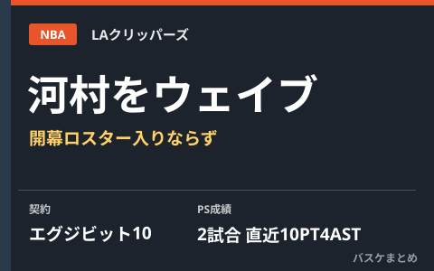

河村勇輝、クリッパーズからウェイブ発表 NBA3年目の開幕ロスター入りならず

LAクリッパーズは現地10月12日（日本時間13日）、河村勇輝選手をウェイブ（契約解除）したと公式X（旧Twitter）で発表しました。8月に結んだ「エグジビット10」契約でトレーニングキャンプに参加し、プレシーズン2試合に出場。直近のラプターズ戦では14分間で10得点4アシスト2スティールを記録していましたが、開幕ロスター入りには至りませんでした。契約にはウェイブ後にGリーグ傘下球団へ加入した場合のボーナス制度が含まれており、他球団からの獲得がなければ傘下のサンディエゴ・クリッパーズでNBA再昇格を目指す見込みです。
エグジビット10契約でキャンプ参加、ラプターズ戦では存在感も
河村は8月、クリッパーズとキャンプ参加のための「エグジビット10」契約を結びました。この契約は開幕ロースター入りが保証されないもので、ガード陣の競争が激しいことも報じられていました。プレシーズン2試合に出場し、直近のラプターズ戦では14分の出場で10得点4アシスト2スティールを記録。アピールを続けていましたが、クリッパーズは現地10月12日（日本時間13日）、河村をウェイブしたと公式発表しました。
| 項目 | 内容 |
|---|---|
| 契約形態 | エグジビット10契約（8月締結） |
| プレシーズン出場 | 2試合（直近のラプターズ戦は14分 10得点4アシスト2スティール） |
| 発表 | 現地10月12日（日本時間13日）、クリッパーズ公式がウェイブを発表 |
今後はGリーグ傘下サンディエゴでの再アピールが見込まれる
河村のエグジビット10契約には、ウェイブ後にクリッパーズ傘下のGリーグ球団に加入した場合のボーナス制度が含まれています。報道によれば、他球団からの獲得がなければ、傘下のサンディエゴ・クリッパーズに加入してNBA再昇格を目指す見込みとされており、Gリーグで60日以上プレーした場合は最大9万1000ドルのボーナスが支給されると伝えられています。河村はこれまで2シーズン連続でメンフィス、シカゴと渡り歩きながらツーウェイ契約でのNBA挑戦を続けており、今季はNBA挑戦3年目でした。
Q. 「エグジビット10」とはどんな契約？
A. トレーニングキャンプへの参加を目的とした無保証の契約で、開幕ロースター入りは保証されません。ウェイブされた場合でも、球団の傘下Gリーグ球団に加入すればボーナスが支給される仕組みが含まれることがあります。
出典：スポニチアネックス「河村勇輝がクリッパーズから契約解除…チーム公式発表 勝負のNBA3年目へ猛アピールも実らず」／バスケットボールキング「クリッパーズが河村勇輝をウェイブと発表…NBA挑戦3年目、プレシーズン2戦出場も契約切り替えならず」／バスケットボールZINE「クリッパーズが河村勇輝をウェイブ 傘下サンディエゴからNBA再昇格を目指す見込み」ほか
https://news.yahoo.co.jp/articles/9980bc5d19c591e5af7173c8005d74e017fe5f54
https://basketballking.jp/news/world/20261013/637516.html
https://www.basketball-zine.com/article/detail/118046